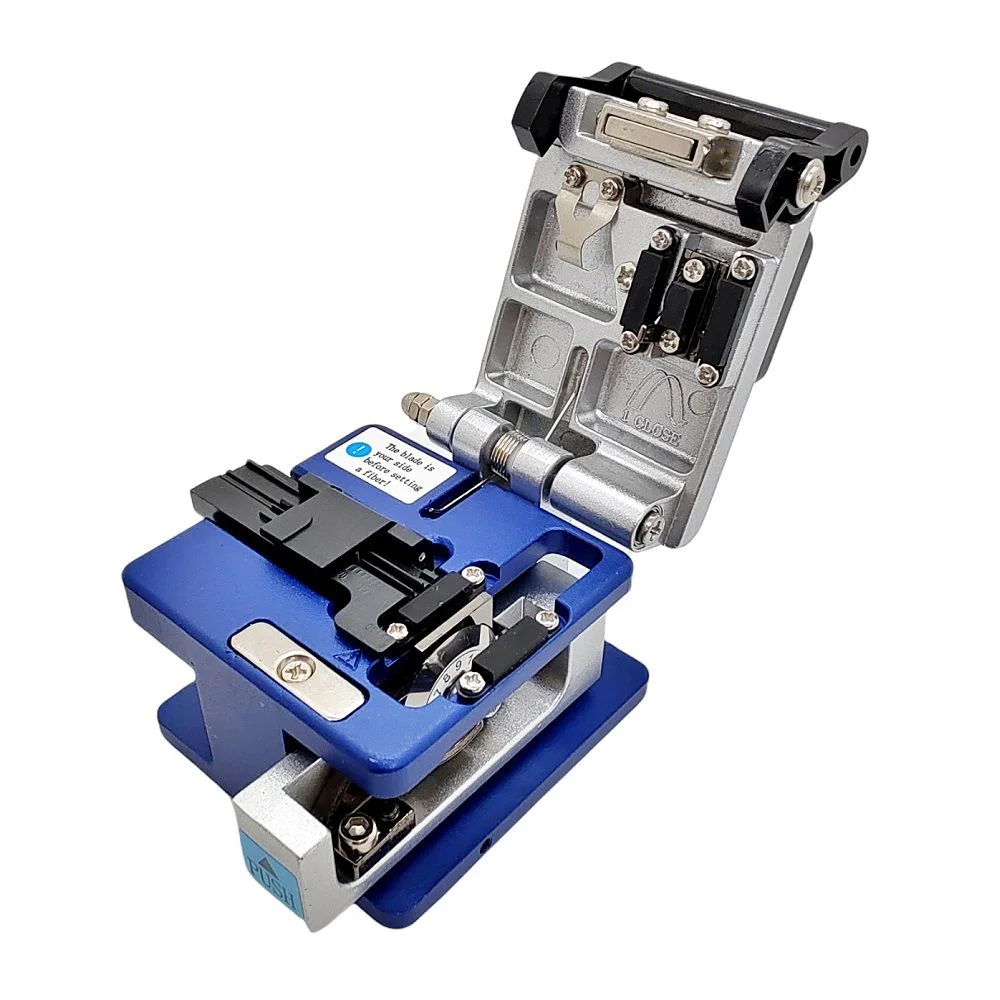

Trilha do Conector üöÄ
üìñ M√≥dulo 3: Ferramentas e Materiais de Trabalho
Conhecer suas ferramentas é o primeiro passo para um trabalho bem-feito. Você é responsável por ajudar a organizar e cuidar desses equipamentos.
3.1. Caixa de Ferramentas Virtual
Clique em uma ferramenta específica de fibra para ver os detalhes.

Clivador de Precisão
 Tesoura para Kevlar
Tesoura para Kevlar
 Decapadores de Fibra
Decapadores de Fibra
3.2. Materiais de Instalação
- Cabo Drop Óptico: O cabo que vai do poste até a casa do cliente.
- Conector de Campo (Fast Connector): Permite conectar a fibra de forma rápida, sem necessidade de fusão.
- Máquina de Fusão: Equipamento que "derrete" (funde) duas pontas de fibra, criando uma emenda perfeita. Operada pelo técnico.
- Protetor de Emenda (Tubete): Pequeno tubo que protege a fibra após a fusão.
- ONT (Optical Network Terminal): Equipamento que recebe a fibra e entrega a internet para o roteador.
üí° Demonstra√ß√£o de Manuseio


üí° Simulado - M√≥dulo 3
1. Qual ferramenta específica é utilizada para cortar os fios amarelos de resistência (Kevlar) dentro do cabo?
2. A limpeza da fibra nua é crucial e deve ser feita com ________ e lenços especiais.